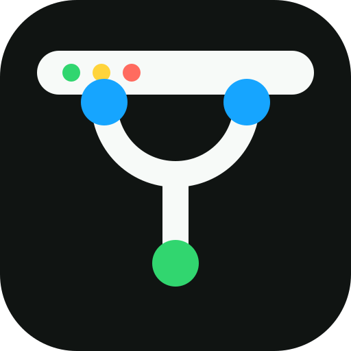

Scan folders, not tabs
Point GitStatusBar at folders such as ~/Documents or ~/Projects.
It finds local repositories and keeps the menu grouped around the
places you actually work.

GitStatusBarNative macOS menu bar app
Scan your local git repositories and see branch, clean, dirty, ahead, and behind status from the menu bar.
Refresh when you ask. Idle CPU stays at zero.
Scan one or more folders and compare clean, dirty, ahead, and behind counts.
Open repos in Finder, Terminal, editors, or their hosted remote pages.
Manual by design
GitStatusBar checks your repositories when you ask it to. Local refresh updates working-tree status, and remote fetch only happens from the explicit Refresh + fetch action. That keeps idle CPU at zero and avoids hidden git traffic while you are working.
Why it exists
Point GitStatusBar at folders such as ~/Documents or ~/Projects.
It finds local repositories and keeps the menu grouped around the
places you actually work.
See clean, modified, untracked, ahead, behind, stash, and no-remote
signals without reading raw git status output for every project.
The app does not poll in the background. Refresh local status with
⌘R, or fetch remotes only when you choose ⇧⌘R.
GitStatusBar is a small AppKit menu bar app with no Dock icon, no browser runtime, and no account sign-in.
Install
The release build is ad-hoc signed. On first launch, right-click the app in Finder and choose Open.
brew install --cask rogue-socket/tap/gitstatusbar
Privacy
GitStatusBar does not require login, sync, or a hosted service.
The app does not send repository names, branches, paths, or status data anywhere.
Network git operations only happen when you explicitly choose Refresh + fetch.
FAQ
No. Local refresh is manual, and network fetches only happen when you choose Refresh + fetch.
It lives in the macOS menu bar, but it does not continuously poll repositories in the background.
Yes. Add folders such as ~/Documents or ~/Projects, and GitStatusBar scans the repositories inside them.
The release is ad-hoc signed. Right-click the app in Finder and choose Open once to allow it.
No. GitStatusBar scans local repositories on your Mac and has no account, sync service, or telemetry.
GitStatusBar is not a replacement for your editor, terminal, or GitHub Desktop. It is a lightweight overview for many local repositories.
Yes. The source is available on GitHub, and the app can be built with Swift Package Manager.